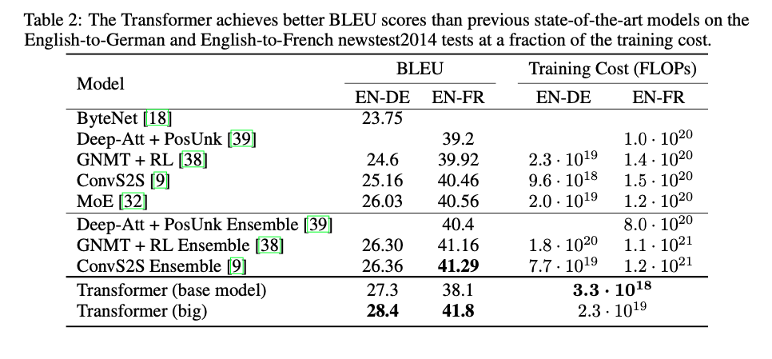
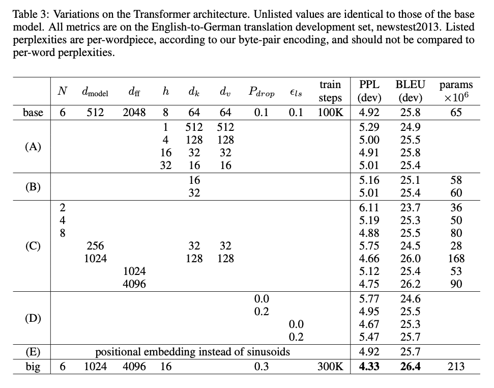

Training
This is a very open paper where there is actually enough information for someone to go out and try this for themselves. I appreciate the transparency the paper gives.
They trained English-German on 4.5M sentence pairs, while English-French was trained on a much larger 36M sentences.
Their base model and variants only consumed about 8 hours of time with 8 P100 GPUs. The largest model they trained which provided SOTA results was only 3.5 days, which was a noticeable fraction smaller than all other SOTA contenders. This is in a large part a testament to the computational parallelization attention provides.
They used the Adam optimizer and employed dropout on (1) each sub-layer before being added to the next sub-layer input, (2) on the sums of the embeddings and (3) on the positional encodings in both the encoder and decoder stacks.
Results
On machine translation, which seems to be the focus of the technique to start, the transformer achieves state of the art on English-to German translation suing only a fraction of the training cost to competitive models. OnEnglish-to-French, they achieved single model state of the art, at 1/4 of the training cost of the previous best. Results can be seen below in table 2.

Model Variations
I like getting to see in what ways they have experimented around in modulating the hyperparameters to see the particular hyperparameters effect on their model. Below they summarized well the variations they tried, namely changing the number of attention heads or the dimension of the key or value parameters and respectively.

Conclusions
A large part that I got from this paper was the effectiveness of the attention mechanism for GPU utilization and computational efficiency. It really can move the needle to find efficient ways to compute the layers of a network without necessarily adding anything particularly novel. The self-attention only mechanism is very compelling and I’m glad to have gotten through this paper.